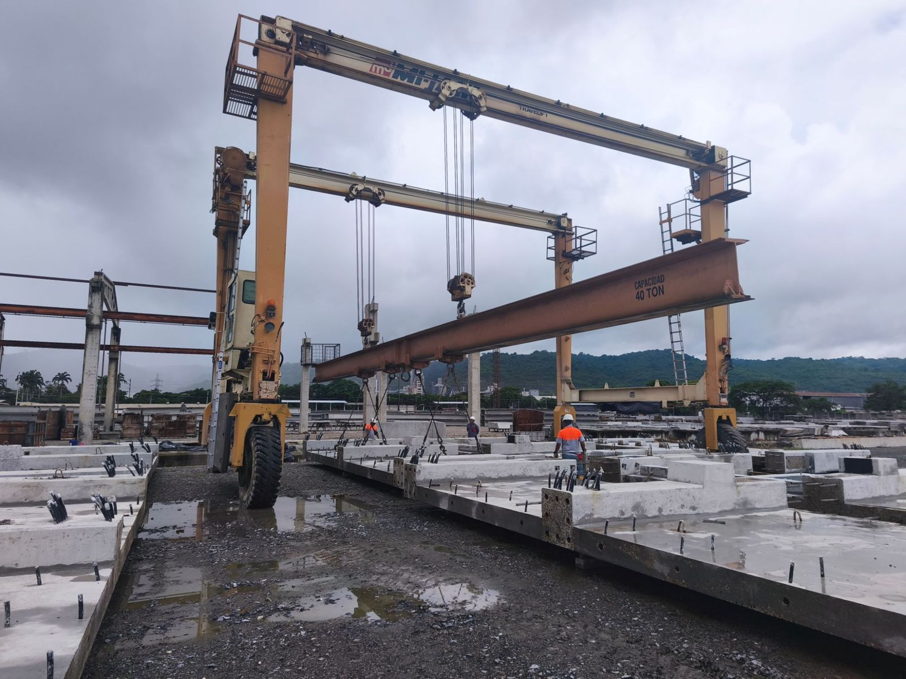
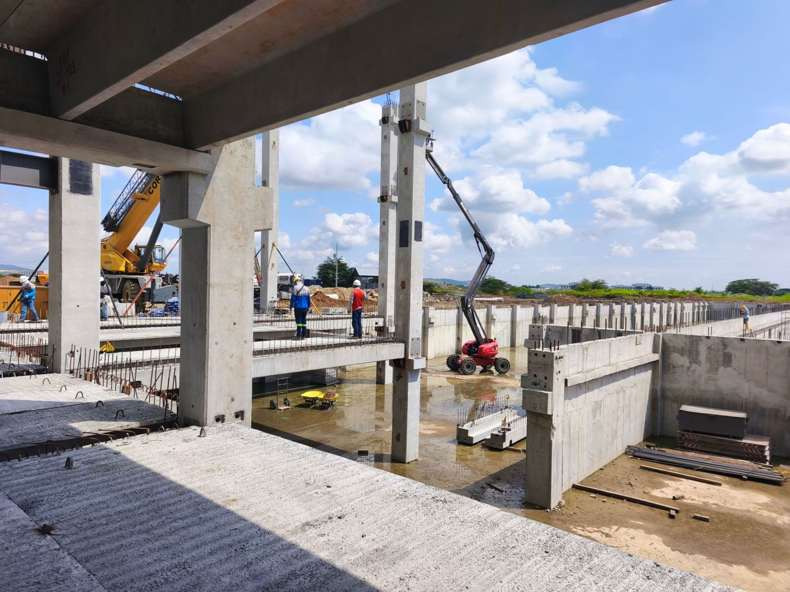

Contacto directo
Hablas con el equipo de Splice Sleeve para Latinoamérica, sin capas comerciales entre tu proyecto y la fábrica.
Sistema NMB Splice Sleeve
Tu planta produce columnas, vigas y muros que, una vez montados, trabajan como una estructura continua. El conector NMB queda embebido en el elemento, sin cajuelas ni soldadura, y se rellena en obra con un grout de alta resistencia.
Este sitio es el contacto directo de Splice Sleeve en Latinoamérica. No es el sitio de un revendedor ni de un distribuidor. Te atiende el Ing. Rodney Bellido de Luna, con apoyo de ingeniería para plantas de prefabricados.
Directo de fábrica
Este sitio es el contacto directo de Splice Sleeve en Latinoamérica. No es el sitio de un revendedor ni de un distribuidor.
Hablas con el equipo de Splice Sleeve para Latinoamérica, sin capas comerciales entre tu proyecto y la fábrica.
Todos los envíos se realizan directamente desde la fábrica, por el puerto de Yokohama en Japón, sin intermediarios.
Cada cotización parte de una evaluación de tu proyecto, hecha junto a nuestros ingenieros en Japón.
Solución principal
El sistema NMB Splice Sleeve está formado por un conector cilíndrico de fundición dúctil y un grout especial de alta resistencia y sin retracción, el SS Mortar. Según el fabricante, el desempeño estructural del conector equivale al de un elemento continuo o de una unión monolítica diseñada para concreto vaciado in situ.


El conector se fija al molde junto a la armadura y queda embebido en la columna, viga o muro. El tope de barra (Rebar Stop) posiciona la barra y un tornillo de fijación opcional la bloquea durante la producción.
El elemento se monta sobre las barras de espera del elemento inferior o de la fundación, que entran en el conector. No se necesita preparar el extremo de la barra, basta el corte con sierra o con soplete.
El SS Mortar se inyecta con bomba manual o eléctrica, en posición vertical u horizontal. Con la variante Pre-Grout el conector se llena antes del montaje y no quedan puertos a la vista.
En aproximadamente un día el conector está curado. En la superficie solo quedan pequeños parches en los puertos de entrada y salida.
El conector va completamente dentro del elemento. Evitas los bolsillos para soldar o apernar y el calor de la soldadura, que puede fisurar el concreto y abrir paso a la corrosión.
El conector es simple de instalar y no depende de mano de obra especializada, así tu cuadrilla de montaje avanza más rápido.
Estructuras con NMB resistieron el terremoto de Hanshin de 1995 (M 6,9) y el del Este de Japón de 2011 (M 9,0). Un antecedente clave para Chile, Perú, México, Colombia y Centroamérica.
Una misma familia de conectores para uniones verticales y horizontales, con barras del mismo diámetro o hasta dos diámetros menores que el del conector.
Videos del canal oficial de Splice Sleeve North America, en inglés.
Productos para prefabricados
Todos los conectores se usan exclusivamente con SS Mortar. Te ayudo a seleccionar el modelo y el tamaño según el diámetro y el grado de tus barras.

El primer conector mecánico del mundo para unir elementos prefabricados, relleno con grout de alta resistencia. Cuerpo corto, que reduce la longitud de las barras de espera y el consumo de grout.
Normas según el fabricante: Eurocode 2+8, BS 8110, ACI 318 Tipo 2, IBC, AASHTO, ISO 15835, BCJ Clase SA.
Ficha en nmbsplicesleeve.com
Conector estándar para prefabricados del catálogo norteamericano.
Cumplimiento según el fabricante: ACI 318 Tipo 1 y Tipo 2, informe ICC-ES ESR-3433.
Tablas de dimensiones en splicesleeve.com
Versión mejorada para prefabricados, con más tolerancia de montaje que el conector estándar.
Cumplimiento según el fabricante: ACI 318 Tipo 1 y Tipo 2, informe ICC-ES ESR-3433.
Tablas de dimensiones en splicesleeve.com
Grout de alta resistencia, no metálico y sin retracción, formulado para los conectores NMB y producido bajo control de calidad. Todos los conectores se llenan completamente con SS Mortar, el fabricante no admite otro grout.
Según el catálogo norteamericano, se mezcla un saco con un galón de agua (aprox. 3,8 litros) durante 2,5 minutos.
Video, cómo mezclar SS MortarApoyo de ingeniería para plantas de prefabricados
Llevar el conector NMB del catálogo a la línea de producción exige decisiones de diseño, de molde y de montaje. El Ing. Rodney Bellido de Luna acompaña a tu equipo técnico en cada etapa, en español y en tu zona horaria.
Opción para obra
En concreto vaciado in situ, el traslapo de barras crece con el diámetro, congestiona la armadura, dificulta la compactación y depende de la resistencia del concreto. La Slim-Sleeve empalma las barras a tope y, según el fabricante, obtiene la resistencia del empalme sin depender de la calidad del concreto. También sirve para vaciados de cierre entre elementos prefabricados.

Normas según el fabricante: Eurocode 2+8, BS 8110, ACI 318 Tipo 1 y Tipo 2, IBC, AASHTO, ISO 15835, BCJ Clase A. Informe ICC-ES ESR-3141.
Video, aplicación horizontal Video, jaula de armadura con tope Tablas de dimensiones
Certificaciones y documentos
Cada documento se abre directamente desde los sitios oficiales de Splice Sleeve o desde ICC-ES. La mayoría está en inglés, si necesitas ayuda para interpretarlos escríbeme.
Bibliotecas completas: nmbsplicesleeve.com y splicesleeve.com.
Caso de éxito en Latinoamérica
Edificio de oficinas construido con elementos prefabricados de Precreto unidos con conectores NMB Splice Sleeve.
Como proyecto cast in place el plazo estimado era de 36 meses. La propuesta de Precreto con prefabricados lo bajaba a 18 meses. Con prefabricados Precreto y conectores Splice Sleeve, la obra gruesa se ejecutó en 8 meses.
Ver detalles y videos en Instagram de Precreto

Cómo cotizar
Qué vas a construir, dónde y con qué elementos prefabricados.
El total de conectores que requiere el proyecto.
Con esa información realizamos una evaluación junto a nuestros ingenieros en Japón y te enviamos la cotización. El despacho sale directamente desde la fábrica por el puerto de Yokohama, sin intermediarios.
Trayectoria
Los conectores NMB se usan ampliamente en edificios residenciales y comerciales de Estados Unidos, Japón y Singapur, además de puentes, estacionamientos y obras de infraestructura en otros países.
Fuente: Splice Sleeve Japan, Ltd. y Splice Sleeve North America, Inc.
Escríbeme por WhatsApp con los datos del proyecto y la cantidad total de conectores. Lo evaluamos junto a nuestros ingenieros en Japón y te enviamos la cotización.
Cotizar por WhatsApp